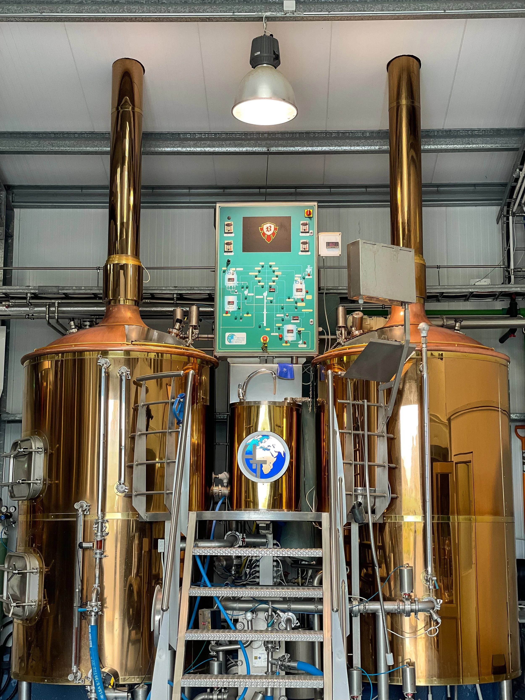
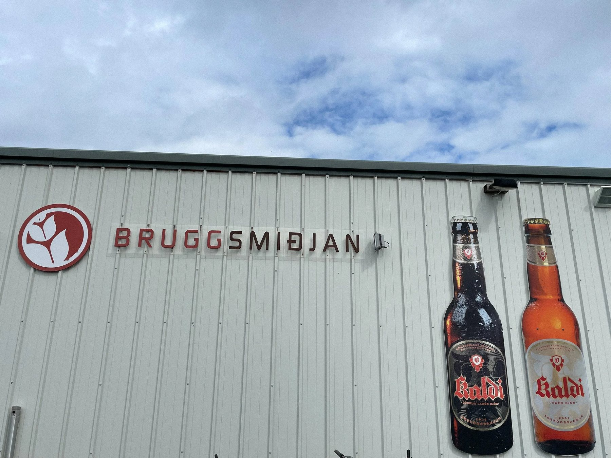
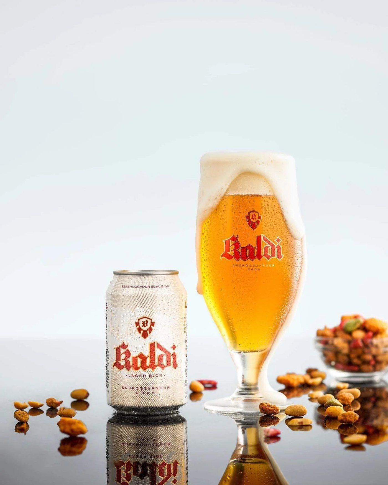
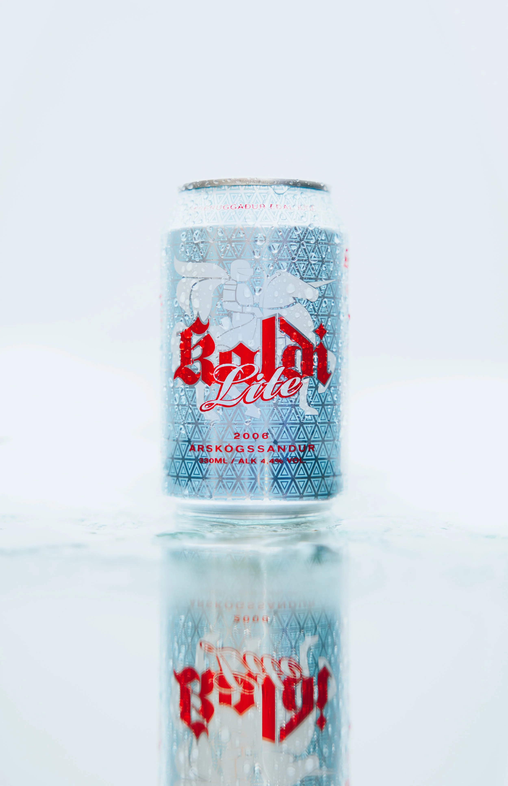
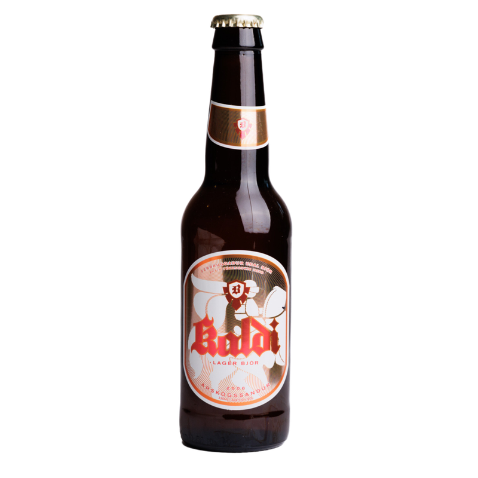
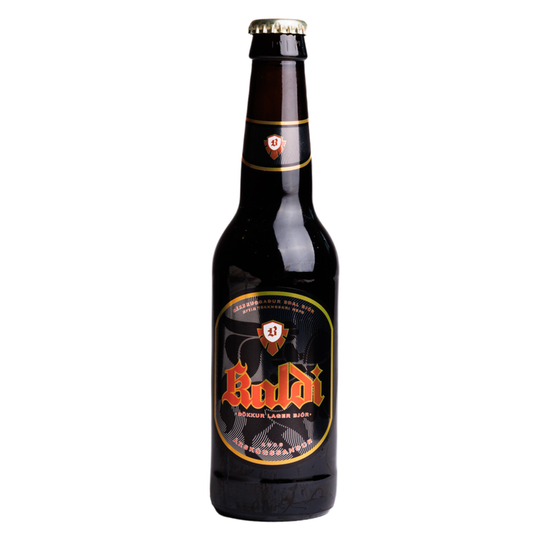
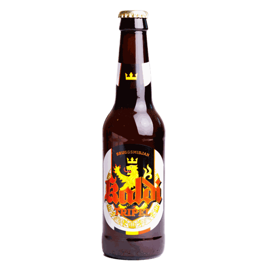
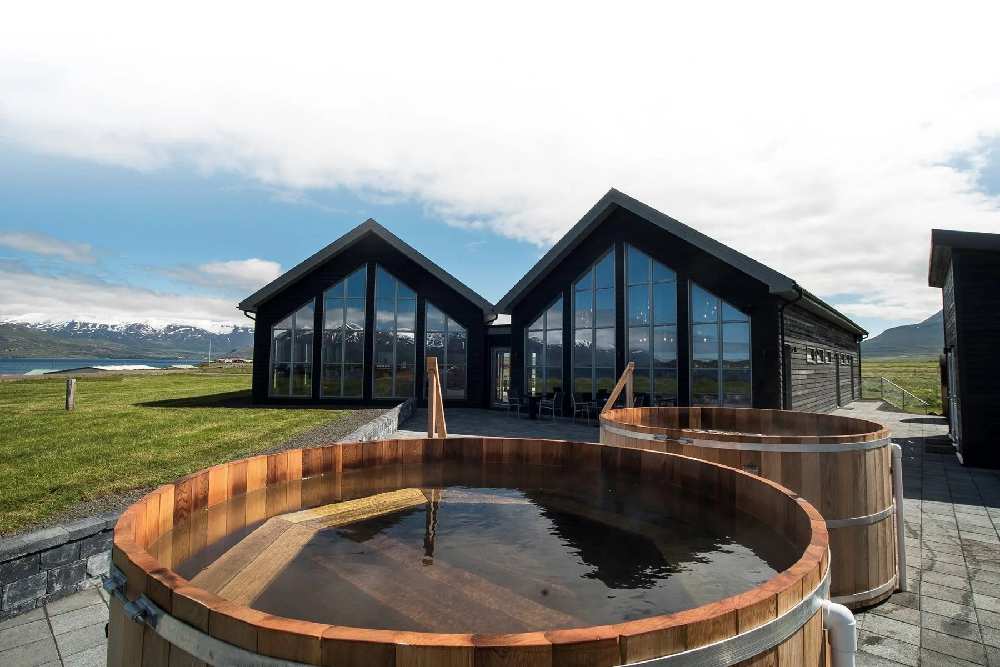
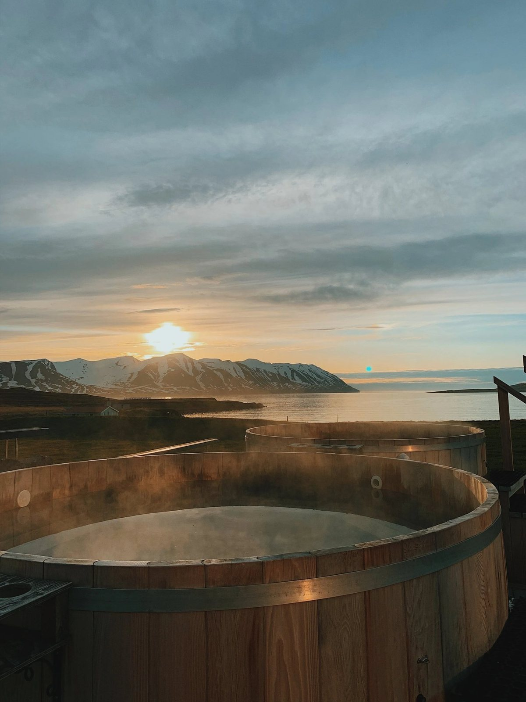

Bruggsmiðjan Kaldi
Ein vetrarnótt, allur skalinn
Á hverjum miða stendur riddarinn, skjaldarmerkið og orðið Kaldi í sama gotneska skriftinni. Hver bjór fær sitt blek, sami riddarinn, sama nóttin í Eyjafirði.
Bjórinn er kenndur við kuldann. Hann er bruggaður eftir tékkneskri hefð frá 1842, ógerilsneyddur, án rotvarnarefna og án viðbætts sykurs, við fjörð þar sem fjöllin standa hvít stóran hluta ársins.
Hver bjór ber sitt blek í þessari einu nótt.
Jólin í Bruggsmiðjunni
Jóla Kaldi hefur oft verið valinn besti jólabjórinn á Íslandi og selst stundum upp áður en síðasti jólasveinninn kemur til byggða. Súkkulaði Porterinn fylgir honum, með Nóa Síríus súkkulaði í suðunni.
Besta vatn í heimi
Föðuramma Agnesar var vön að segja að á Árskógssandi ættum við besta vatn í heimi. Bjórinn er bruggaður úr því, vatninu úr lindinni í Sólarfjalli við utanverðan Eyjafjörð.
- LindinSólarfjall, við utanverðan Eyjafjörð
- HráefninVatn, maltað bygg, humlar og ger, eftir þýsku gæðalögunum
- ByggiðFrá Tékklandi, heimalandi pilsnersins
Ógerilsneyddur, án rotvarnarefna og án viðbætts sykurs.

Eftir 26 ár á sjó slasaðist Ólafur á hné. Agnes sá frétt um lítil brugghús í útlöndum og viku síðar voru þau hjónin komin til Danmerkur að læra að brugga.
Fyrsta bruggun fór fram 22. ágúst 2006 og fyrsta átöppun 28. september sama ár, með tékkneska bruggmeistaranum David Masa. Í dag er Kaldi Ljós einn söluhæsti flöskubjór landsins.
Beint frá býli

380 fermetrar við fjörðinn
Bruggsmiðjan stendur á Árskógssandi, 12 km frá Dalvík og 35 km frá Akureyri, í þorpi þar sem allt snerist um fiskinn þar til hjónin Agnes og Ólafur fóru að brugga. Þetta er fyrsta handverksbrugghús á Íslandi.


Allur skalinn
Þitt merki. Okkar bjór.
Viltu sérmerktan Kalda fyrir brúðkaupið, veisluna eða fyrirtækið? Bruggsmiðjan græjar það í bæði flöskur og dósir.
Kynning í Bruggsmiðjunni
- 60 mínútna kynning fyrir hópinn þinnsaga og handverk
- Sagan frá 2006, sjómaðurinn sem fór að bruggainnifalið
- Skoðunarferð um verksmiðjunainnifalið
- Smakk á bjórunum beint af dæluinnifalið
- Stærri hópartilboð eftir stærð



Bjórböðin og Hótel Kaldi


- Bjórböð Kalda, böðun í ungum bjórbjorbodin.is
- Ekkert ljósmengun, norðurljósin sjást beint úr pottunumá veturna
- Veitingastaður og bar á staðnumopið gestum
- Hótel Kaldi, gisting í þorpinuvið hlið brugghússins
- Bjórkútar með frírri dælu fyrir viðburðibrúðkaup og afmæli